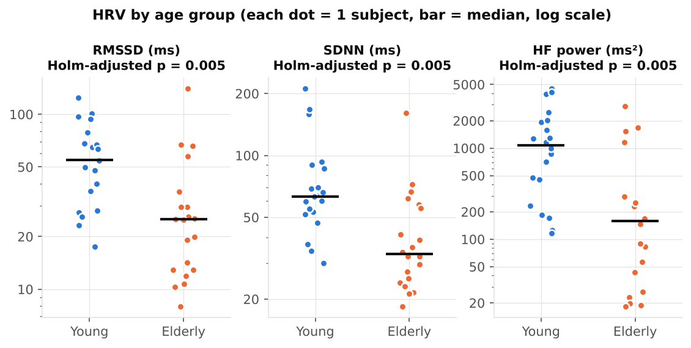
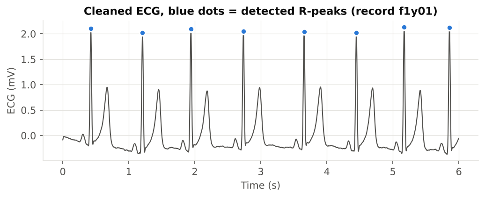

Sample projectNeuroKit2HRV
Batch ECG → HRV pipeline: 40 subjects, young vs elderly
One script turns 40 raw ECG recordings (PhysioNet Fantasia, 250 Hz) into cleaned R-peaks, per-subject RR-interval files, a signal-quality score, and time- and frequency-domain HRV, followed by a corrected group comparison.
- 40 / 40recordings passed quality control
- 55 → 25 msmedian RMSSD, young → elderly
- p = 0.005Holm-corrected, Mann-Whitney U


Deliverables: RR-interval CSVs · HRV table · QC flags · figures · methods paragraph · one-command rerun.